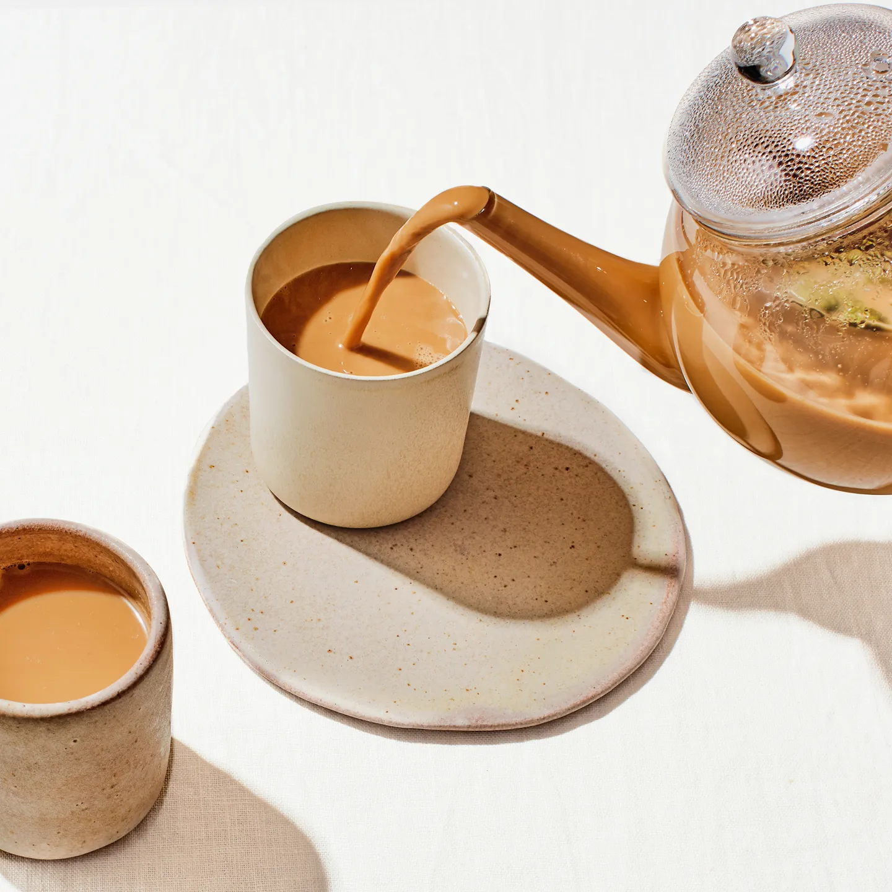

Karak Chai Recipe

Description
Masala chai (lit. 'mixed-spice tea') is a popular beverage throughout South Asia, originating in the early modern Indian subcontinent.
Chai is made by brewing black tea (usually CTC tea) in milk and water and then sweetening with sugar.
Adding aromatic herbs and spices creates chai, although chai is often prepared unspiced.
Ingredients
6 Servings
- 4x Tetley British Blend or Orange Pekoe tea bags
- 13x Cardamom Pods, Cracked
- 1x 3"-Long Cinnamon Stick
- 3x Tbsp. Sugar
- 1x Tbsp. Vanilla Extract
- 1x Cup Evaporated Milk
Method
- Bring 6x Cups of Water to a Boil in a Medium Pot or Tea Kettle.
- Add Tea Bags, Cardamom, Cinnamon, Sugar, and Vanilla Extract then Return Water to a Boil.
- Stir in Evaporated Milk and Return Water to a Boil again; Carefully Ensure the Tea doesn’t Boil Over.
- Reduce Heat to Medium-Low and Simmer until Thick, Creamy, and Caramel in Color, about 30 Minutes; The Longer the Tea Simmers the Stronger and Creamier it'll be.
- Strain Tea through a Fine-Mesh Sieve into Mugs; Discard Spices and Tea Bags.
- Enjoy Hot Karak Chai!